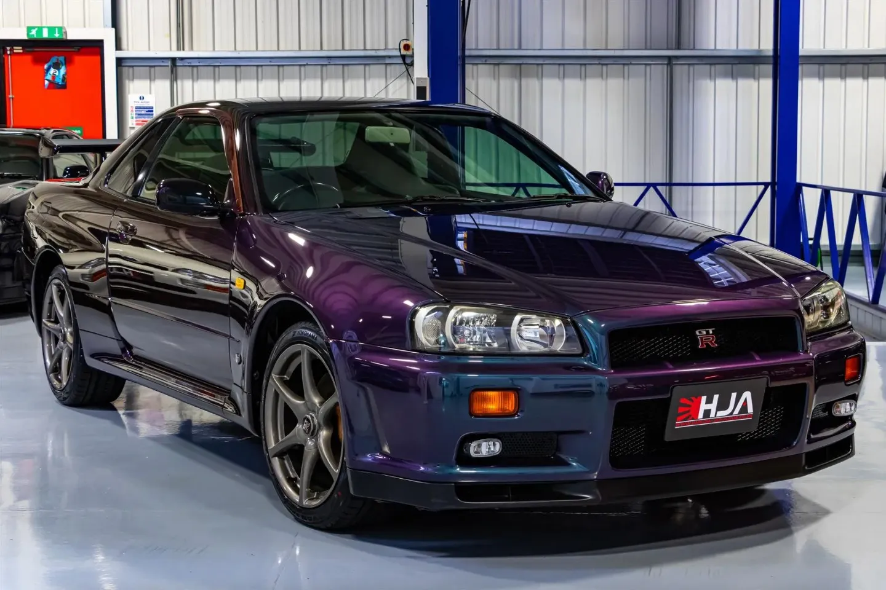
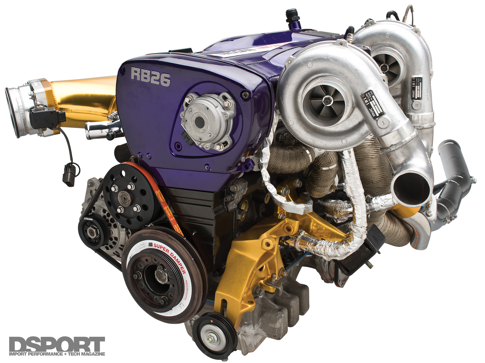
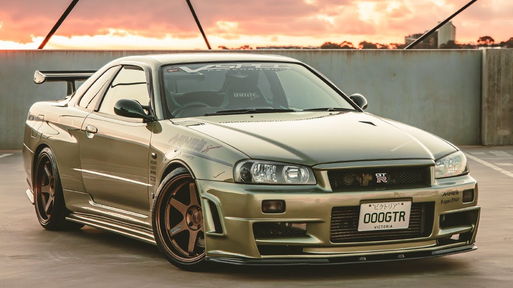
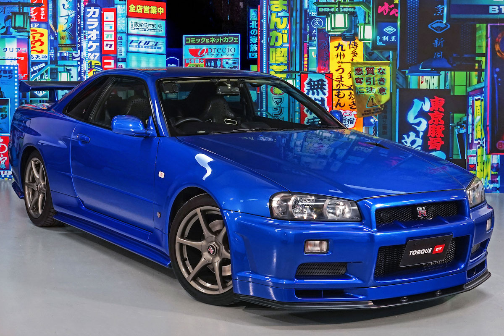
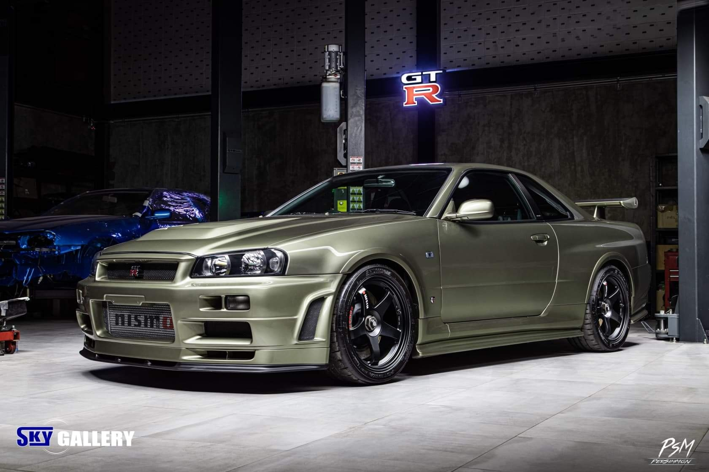

Nissan Skyline

The Nissan Skyline was first launched in April 1957 by the Japanese automaker Prince, as Prince Skyline, and was later continued in production by Datsun and later by Nissan,after the merger of the latter two in 1966. The Skyline was available in coupé, sedan and station wagon versions until 1989, when the production of station wagon version cars stopped,due to a new platform first used in the Nissan Skyline R32. Timelessly, the Nissan Skyline it is a milestone in automotive history and even today is a topic of discussion for enthusiasts of classics, but also of improved cars. Many of them even imported individual Skylines from others countries, in order to have such a car in their possession,in those markets where Nissan did not have the specific one vehicle officially. The Nissan Skyline was also the first Japanese car to be introduced to the European market,making its debut in 1957 at the Paris Motor Show.
Tenth Generation (Nissan Skyline R34 1998)

May 1998 saw the launch of the tenth generation Skyline, codenamed HR/ER/BNR34, which became known as the Skyline R34.In this new generation, special emphasis was placed on the sporty character of the car, but also on its environmental friendliness, presenting at the same time a new engine, with the code name RB25DET NEO . A total of 4 engines accompanied the R34, with the smallest being 2,000 cm³. The RB20E engine was not used in this generation,as it was replaced by an older one, the RB20DE, which was improved to meet the model's expectations and named the RB20DE NEO. The RB20DE NEO engine combined with the 5-speed gearbox made it the most economical six-cylinder Skyline ever released.The 2.5-liter RB25 engine was used in several versions of the R34, either as naturally aspirated or in combination with a turbocharger, and produced from 200 (147 kW) to 280 (206 kW) hp in its turbo version.The five-speed automatic gearbox was not used in the tenth generation Skyline, replaced by a four-speed gearbox with Tiptronic for all versions of the R34 with automatic gearboxes.
Nissan Skyline R34 GT-R
In January 1999, a year after the start of the tenth generation of the Skyline, the GT-R version of the model was also presented, which was also the top version of the car, having undergone improvements in the chassis, as well as in other places. The overall length of the car was reduced, while the 5.8-inch screen was a first for its equipment at the time, which provided seven different indicators vital to the engine, as well as statistics such as turbocharger pressure, water and oil temperature, etc.The engine used in the R34 GT-R was the RB26DETT, which was not used in the regular versions of the car, and was the same engine used in the previous generation. This engine, combined with two turbochargers, produced 332 hp (244 kW) and 39.2 kg (392 Nm) of torque, while officially the car produced 276 hp.
Engine
The RB26DETT engine is a 2.6 L (2,568 cc) Inline-six engine manufactured by Nissan, for use in the 1989-2002 Nissan Skyline GT-R.The RB26DETT engine block is made from cast iron, while the cylinder head is made from aluminium alloy, which contains DOHC 4 valves per cylinder (24 valves in total) setup. The intake of the RB26DETT varies from other RB-series motors in that it has six individual(3 sets of 2 throttle assemblies that are siamesed together) instead of a single throttle body. The engine also uses a parallel twin-turbo system, using a pair of T25-type ceramic turbochargers set by the wastegates to limit boost pressure to 10 psi (0.69 bar), although the Skyline GT-R has a built in boost restrictor to keep boost under 14 psi (0.97 bar).
Versions of Nissan Skyline R34 GT-R
- V-spec I 
- V-spec II 
- M-Spec 
- Z-Tune
The V-Spec I (Victory Specification) version was an upgraded version of the regular GT-R further improving the performance of the car. In the V-Spec I version two additional pieces of information were added to the display readings which related to the intake air temperature,as well as the temperature of the exhaust gases. The ATTESA four-wheel drive system was also upgraded, which was called the ATTESA E-TS Pro in its advanced form, while the standard equipment included an Active LSD limited slip differential. The suspension of the V- Spec I, which was now tougher, while an important role in the aerodynamic improvement of the car was played by the air diffusers, with the rear being entirely made of carbon fiber.
A 2002 Nissan Skyline GT-R V Spec II Nur is a rare sight, so the news of a practically brand new one being up for sale makes this car a unicorn. This R34 has just 362km on the odometer, meaning its RB26 2.6-liter twin-turbocharged inline-six engine that produces 330 HP has barely been run in.Only 718 V Spec II Nur R34s were built, and out of this limited-edition run only 156 were finished in the “Millennium Jade” paint job that adorns this low milage example seen here. It’s been left stock all around, featuring its original bronze-toned wheels, shiny silver badges, and chrome-tipped exhaust system, while mechanicals such as the special larger turbos, stiffer suspension, uprated brakes and more are as clean as can be.The GT-R V Spec II Nur has been kept in storage most of its life, evident from the fact that the factory plastic seat covers and paper floor mats still remain in place alongside its untarnished leather interior. Prices for Nissan Skyline GT-Rs are rising as of late, with many fetching around the $100,000 USD mark.

In February 2002, Nissan released a final version of the car, called Skyline GT-R V-spec II Nür and M-Spec Nür depending on which version the car was based on.The name Nür came from the German Nürburgring race track, where the car was developed. A total of 1,000 R34 GT-R Nür were produced, of which 750 were V-Spec II Nür, while 250 were M-Spec Nür. Mechanically, this version was equipped with an improved version of the RB26DETT, which was based on the N1 engine which was used by NISMO for motor racing.The turbochargers were replaced by larger one,in which the pressure was also increased, while the turbo impeller was replaced with a steel one, thus increasing the turbo lag, but increasing the endurance of the turbo. This change allowed owners to further increase the turbo pressure safely, reaching up to 450 hp. There were also changes to the interior of the car, with the stitching of the upholstery differing from the base version, while there was also a new speedometer of the car, which now had a maximum reading of 300 km/h. Finally, the nominal power of the engine was according to Nissan 276 hp, while in reality it exceeded 330 hp from the factory.
The original design of the NISMO R34 GT-R Z-tune was done by NISMO in 2002, around the time production of the Skyline R34 ceased, while the first R34 Z-Tune was built in 2003, using a used Skyline GT-R as a base. V-Spec II. The engine used by this version was the standard GT-R engine (RB26DETT), but which had been modified, guided by NISMO's experiences from the Le Mans and JGTC races,thus making a reliable and strong set. The engine block was strengthened, while the engine displacement rose to 2.8 liters. With the help of larger turbos, but also having as an ally the extremely durable block, the engine's horsepower reached 500 hp (370 kW). This engine became known as the Z1.Shortly after, Nissan gave the go-ahead to build 20 Z-Tune cars for the NISMO anniversary celebration. So NISMO bought twenty R34 GT-R V-Specs that had less than 18,000 miles on the odometer to convert them into the R34 Z-Tune. The cars were completely stripped down to undergo the relevant changes, while the bodywork of the car was made similar to that used by NISMO in motor racing. Wider fenders were used to accommodate the wider rims, while the hood now had new vents. The chassis of the car was strengthened in certain places, while carbon fiber was used in several places. The suspension, transmission,transmission and other parts of the car were redesigned to ensure the car's proper performance under everyday driving conditions,while all Z-Tunes were designed to run their engines up to the range of 8,000 revolutions per minute. The turbos used were from the Japanese company IHI and the nominal power of the engine was 500 hp. This engine became known as the Z2. The suspension was also improved, with the car set up by Sachs, while only for this version Brembo made a special brake system,known as the E brake system. All Z-Tunes were hand-built, with a total of twenty R34 Z-Tunes planned to be built. But their production stopped at the 19th vehicle + two prototype vehicles. The color of choice for the Z-Tune was aspecial silver color called 'Z-tune Silver', and it was priced as high as $180,000 at times, making it one of the most expensive GT-Rs ever released.